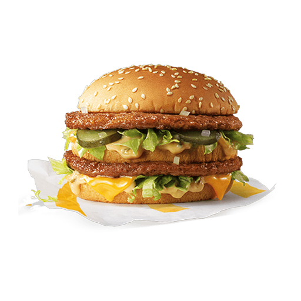
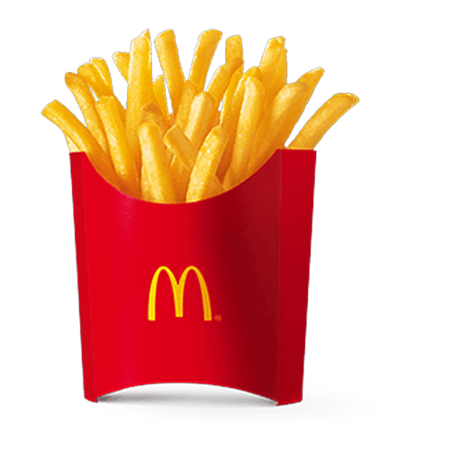

本项目不解决任何实际问题，只负责让你怀着仪式感地吃麦当劳。
每日一卦，玄学点单。把「今天吃什么」外包给封建迷信。周四自动发疯。
把你的订单交给法官。羞辱式省钱，被骂完还想转发。
如果每顿都吃麦当劳，你的人生会重开成什么样？抽天赋，过一生，立墓碑。
基于 麦当劳 MCP × WorkBuddy 开发1024 程序员节创意开发大赛参赛作品 · 非官方产品页面数据为演示数据，真实数据由 MCP 实时驱动
遇事不决，麦门玄学
每一笔冤枉钱，本庭都记得
如实招来——你这单点了什么：
餐品图取自 麦当劳中国官网 真实产品图（640×640）· 版权归麦当劳所有 · 本项目非官方产品
每顿都吃麦当劳的人生，值得一过
—— 开局天赋三连抽 ——

